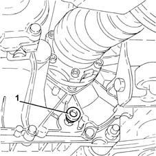
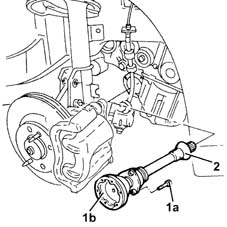
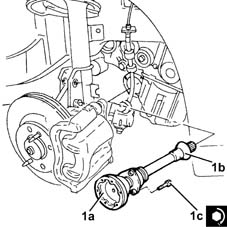
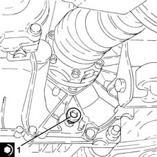

2710A30 intermediate drive shaft - r + r with r/h drive shaft removed
- Path
- Procedures > 27 AXLE > 2710 FRONT AXLE > 2710A drive shafts and joints > 2710A30 intermediate drive shaft - r + r with r/h drive shaft removed
- Kind
- repair procedure (removal / refitting; the operation number is the code)
- Applies to
- engines: 1.3 JTD; all production periods
- Interactive page
- https://sloeber94.github.io/elrnDB-lYpsln/en/#/2429138
Applies to: engines: 1.3 JTD; all production periods
 Removing
Removing
 Refitting
Refitting1. Undo the plug and drain the gearbox-differential oil.

Applies to: engines: 1.3 JTD; all production periods
1. Undo the bolts (1a) and remove the intermediate drive shaft (1b).
2. Remove the dust excluder.

Applies to: engines: 1.3 JTD; all production periods
Refitting
Removing1. Place back in its housing the intermediate drive shaft (1a) complete with dust cover (1b) and secure it with its bolts (1c) to the specified torque.
 | Fastening | Component | Ø | Value (daNm) |
|---|---|---|---|---|
1c | - | - | - | - |

Applies to: engines: 1.3 JTD; all production periods
1. Tighten the gearbox-differential drain plug to the specified torque.
| Fastening | Component | Ø | Value (daNm) |
|---|---|---|---|---|
1 | Drain plug | GEAR CASING PADS | M22 | (Differential side) 4.6 |

Applies to: engines: 1.3 JTD; all production periods
Refill the manual gearbox and differential 0010T40 change manual gearbox oil .